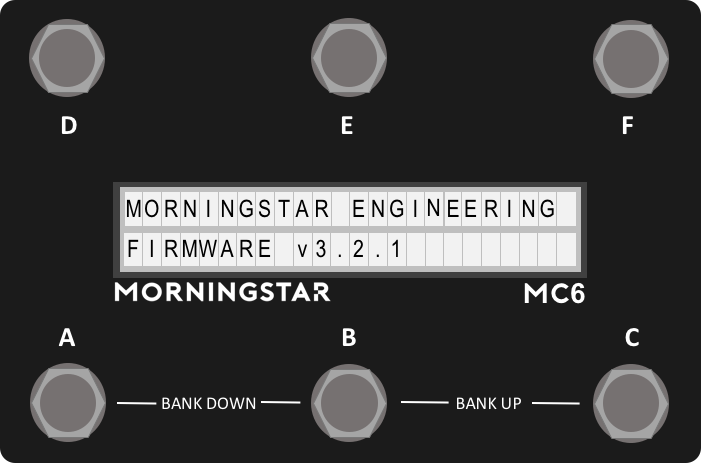

Overview

Latest Firmware: v3.2.3
This section explains how the controller works and how pressing individual switches or different switch combinations will interact with the controller.
Please refer to the Midi Type Glossary as well for more information on selecting the correct midi type that you need.
Description
The MC6 is a fully programmable Midi controller.
How it is structured is simple: There are 30 banks. Each bank has 12 presets, 6 of which are accessible from the 6 switches, while the other 6 are hidden but can be activated by other means such as dual switch presses or external controllers. A Page Toggle function is also available to flip between the first 6 presets and the last 6 presets.
Each preset can be programmed to send out 16 different messages.
Please refer to the Midi Types Glossary for the full list of messages available to you.
We take pride in making the MC6 one of the easiest-to-use programmable Midi controllers in the market. If there is any questions you have using the device, please do not hesitate to drop us an email at help@morningstarfx.com.
TLDR
Too long, didn't read! Cause who likes reading manuals, right? While we encourage you to go through the full manual, here's a quick list of information to get you quickly started. We take pride in making the MC6 as easy to use as possible, and hope that the on-board directions will be intuitive to you.
Entering Edit Menu
Press Switch [D + F] in the main preset page. The last used preset, expression pedal input and bank will be displayed in the menu.
Editing your presets in the editor
Make sure you are in Editor mode. Press Switch [C + D] to enter editor mode or click the Toggle Edit Mode button on the editor.
Make sure to exit Editor mode to have the full functionality available before you use it with your devices.